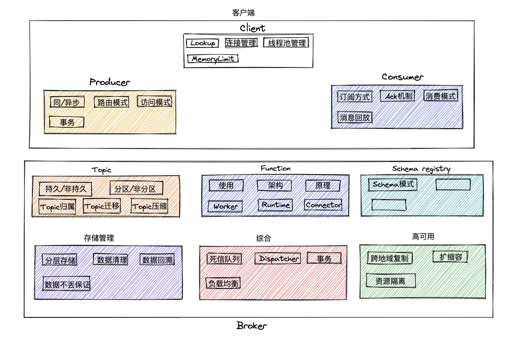

一、引言
系统学习Pulsar的大纲
二、正文
下图是我绘制的Pulsar大纲 (由于时间缘故花的比较粗糙，这张图会不定期更新)
三、学习大纲
一、Pulsar Client
二、生产者
三、消费者
四、Topic
五、Function
六、Schema Registry
七、存储管理
八、综合
九、高可用
四、学习资料
-
Pulsar三本书籍
《Mastering Apache Pulsar》：个人认为是Pulsar系统资料最好的，喜欢Pulsar的伙伴务必阅读此经典
《深入解析Apace Pulsar》：林琳大佬的作品，兼备使用、调优以及原理的介绍
《Apache Pulsar in Action》：目录布局不太好，但针对个别知识点讲得比较精细，可作为补充读物
-
Pulsar官方整理资料大全：收录了大量Pulsar使用、原理、业务场景等精彩的文章资料
五、想对本系列文章读者说的话
坦白了说，现如今的网络环境不像过去那么友好(这个观点不做任何讨论，如果你觉得不对，那么你是对的)，如今还能坚持在网络上输出高质量的作者都是值得尊敬的。我之所以写这系列文章的目的有以下三点：1. 接触技术这些年，受到不少大佬文章的熏陶，技术和思维都有了不少的提升，因此也想做些回馈于技术社区的事情 2. 我知道一定有不少对技术充满热情的小白，我希望能够以Pulsar为切入点给你带来技术的乐趣 3. 通过输出文章来倒推自己持续阅读、提升自己提炼抽象能力。
我能保证的是以下几点
- 这个系列的文章永不收费(降低大家阅读成本)
- 输出的内容都是经过思考的，拒绝复制张贴以及低价值的东西
- 尽可能以图、精简的话来协助大家伙对某个知识点的理解
- 不做模凌两可的解释，宁可偏激的给个错误的答案，我相信有一定依据支撑的错误答案价值大于模糊不清的概念
除此之外，由于本人的知识量以及认知有限，如果有某个知识表述不清楚或者表达有误的地方，恳请指出，大家一起学习共同进步～